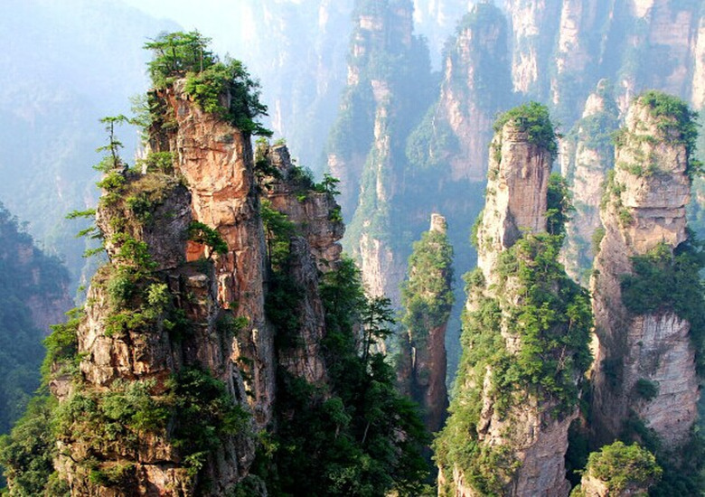
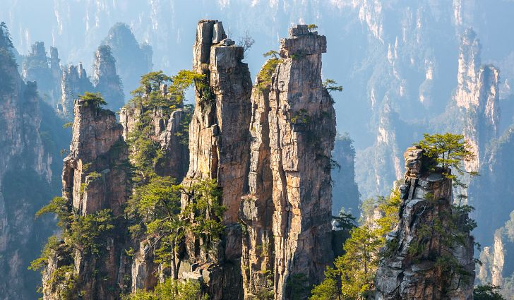
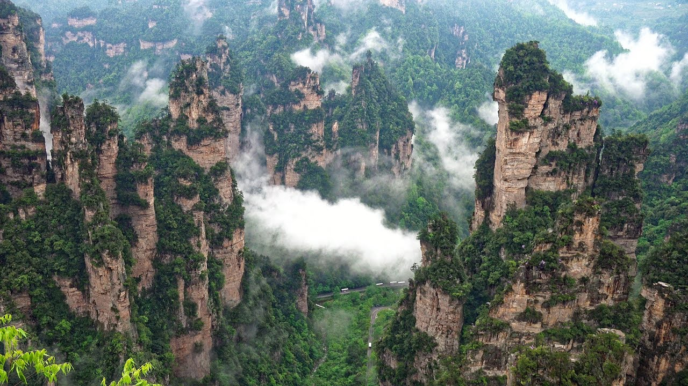

Wulingyuan
At 300 meters (1,000 feet) high, this attraction is definitely not for the faint of heart. The bridge officially opened in August of 2016 and has welcomed thousands of brave visitors in its first month.
Located in Hunan Province, where Chairman Mao came from, Zhangjiajie is a part of the 'rice and fish belt' of China.
Many endangered species of animals and plants can be found there, which prompted the Chinese government to begin conservation efforts to preserve the landscape of Zhangjiajie National Forest Park, named in 1982, long before the area was of interest to tourists.
Perhaps the most famous of these endangered residents is the Chinese Giant Salamander. This massive amphibian lives in the pools and caves throughout the forest and is strictly protected by the Chinese government.


